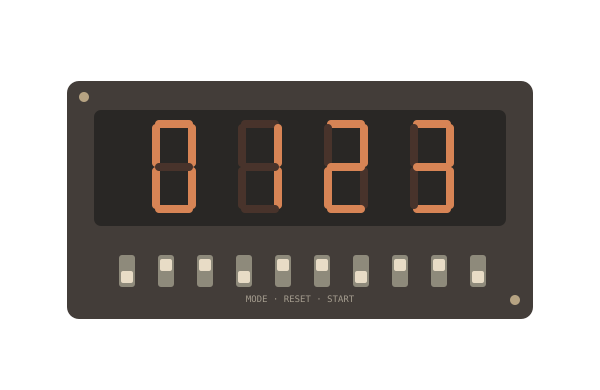
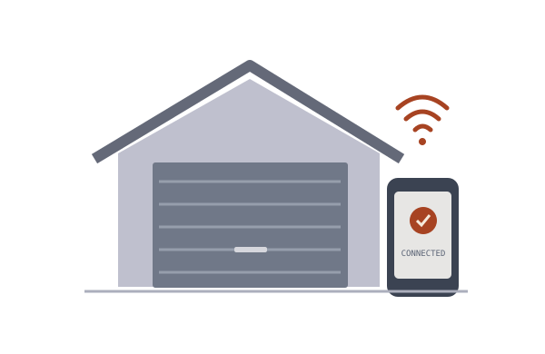

A C++ and Assembly game on the MSPM0 microcontroller, bringing game logic, graphics, sound, and physical inputs together.
Inside the project +
Object-oriented game logic and finite state machines.
Graphics and sprite loading through UART to an LCD.
DAC, ADC, and UART signals checked with an oscilloscope.
C++AssemblyMSPM0
02 / DIGITAL LOGIC

BASYS3 · RTL · 10 MS RESOLUTION
AUG — DEC 2025
Every hundredth counts.
A multi-mode timer built on a Xilinx Basys3 FPGA, connecting a custom datapath and controller to real switches and displays.
Inside the project +
High-level state machine translated into RTL.
Ten switches, button inputs, and four seven-segment displays.
Synthesis, implementation, and bitstream generation in Vivado.
VerilogVivadoFPGA
03 / CONNECTED DEVICES

CUSTOM PCB · RELAYS · PARTICLE.IO
SUMMER 2025
A smarter way home.
A wireless garage controller that opens the door, switches the lights, and reads temperature remotely through a mobile app.
Inside the project +
C++ functions connect a microcontroller to Particle.io.
Analog temperature readings retrieved and processed remotely.
Custom PCB assembled with diodes, resistors, and two relays.
C++Particle.ioPCB design
02 / EXPERIENCE
Beyond the workbench.
Learning by building. And by showing up.
SUMMER 2026Austin, TX
Inspire Semiconductor
Embedded Software Engineering Intern
Built a Linux PCIe endpoint function driver for RISC-V, a U-Boot GPIO driver with devicetree and Kconfig support, and a Yocto machine target for RTL simulation.
LINUX · RISC-V · U-BOOT · YOCTO
SUMMER 2025Potosi, WI
SkyStar Storage Energy
Field Engineer Intern
Restored site capacity by 38% through firmware updates and preventive maintenance, including thermal-management updates and maintenance on 128 battery units.
FIRMWARE · ENERGY STORAGE · FIELD ENGINEERING
SUMMERS 2021–2023Sugar Land, TX
EnPower Resources
Student Intern / Researcher
Fabricated remote oil-well pressure monitors using microcontrollers and custom PCBs, then installed them at oil sites to support wireless monitoring and leak prevention.
MICROCONTROLLERS · PCB DESIGN · IOT
MAR 2022–PRESENTAustin, TX
KomoriCon
Outreach & Volunteer Lead
Helped plan and run an anime convention for 3,000+ guests. Coordinated 213 vendors, 50 volunteers, and 16 panelists, including day-of training and staffing.
COMMUNITY · OPERATIONS · LEADERSHIP
03 / A LITTLE ABOUT ME
Systems thinker. Hands-on builder.
I study Electrical and Computer Engineering at The University of Texas at Austin ↗, where my coursework spans computer architecture, algorithms, embedded systems, and digital logic.
Outside engineering, I’ve helped bring an anime convention to life, participated in the GMTK Game Jam, and completed the 2026 Houston Half Marathon. I enjoy projects that connect technical detail with a shared experience.